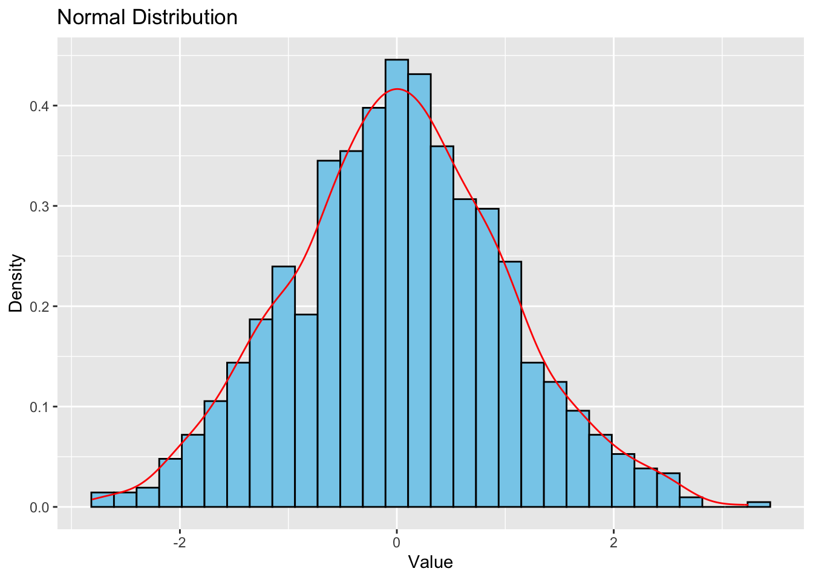
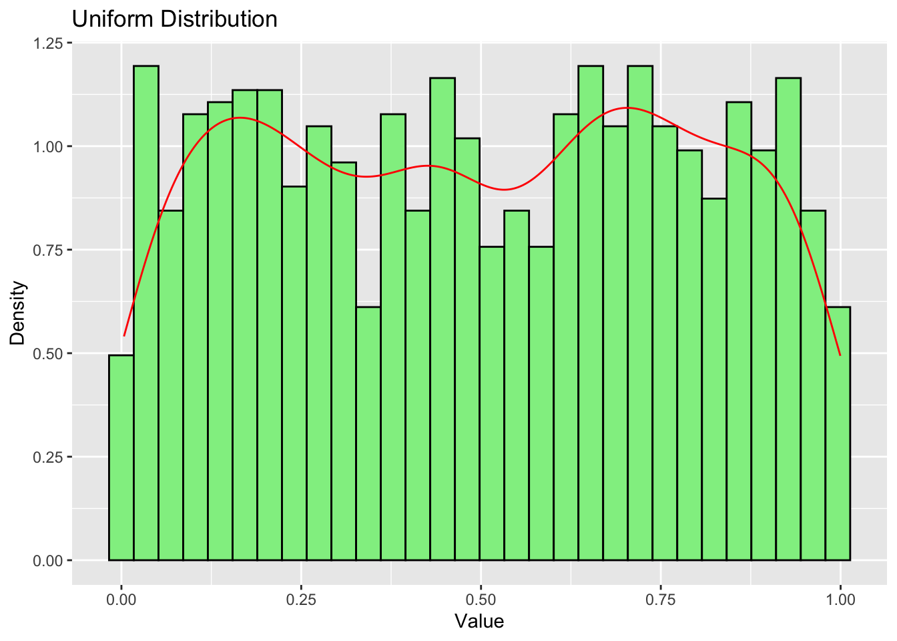

9Validity, Reliability, and Study Types in Social Sciences
9.1 Introduction to Validity, Reliability, and Related Concepts
Before delving into specific study types, it’s crucial to understand the fundamental concepts that underpin rigorous scientific research. This section will explore validity, reliability, bias, variance, accuracy, and precision.
9.1.1 Validity
Validity refers to the extent to which a measurement or study accurately reflects or assesses the specific concept that the researcher is attempting to measure.
Types of Validity: - Internal Validity: The extent to which a study establishes a causal relationship between the independent and dependent variables. - External Validity: The extent to which the results of a study can be generalized to other situations and to other people. - Construct Validity: The extent to which a test measures the concept or construct that it is intended to measure. - Content Validity: The extent to which a measure represents all facets of a given construct.
9.1.2 Reliability
Reliability refers to the consistency of a measure. A measurement is considered reliable if it produces similar results under consistent conditions.
Types of Reliability: - Test-Retest Reliability: The degree to which test scores are consistent from one test administration to the next. - Inter-Rater Reliability: The degree of agreement among raters. - Internal Consistency: The consistency of results across items within a test.
9.1.3 Bias, Variance, Accuracy, and Precision
These concepts are often used in discussions of measurement and study design, and some overlap in their meanings:
Bias: A systematic error that leads to a deviation from the true value. Bias can occur in sampling, measurement, or analysis.
Variance: The spread of data points around the mean. Low variance indicates that data points are clustered closely around the mean.
Accuracy: The closeness of a measured value to the actual (true) value. Accuracy is affected by both bias and variance.
Precision: The closeness of two or more measurements to each other. Precision is related to reliability and is affected by random error.
Let’s visualize these concepts using R:
library(ggplot2)library(gridExtra)# Function to generate datagenerate_data <-function(n, true_mean, bias, sd) { data <-rnorm(n, mean = true_mean + bias, sd = sd)return(data)}# Generate datasetsset.seed(123)accurate_precise <-generate_data(100, 10, 0, 1)biased_precise <-generate_data(100, 10, 2, 1)accurate_imprecise <-generate_data(100, 10, 0, 3)biased_imprecise <-generate_data(100, 10, 2, 3)# Create plotsplot_data <-function(data, title) {ggplot(data.frame(x = data), aes(x = x)) +geom_histogram(binwidth =0.5, fill ="skyblue", color ="black") +geom_vline(xintercept =10, color ="red", linetype ="dashed") +xlim(0, 20) +ggtitle(title) +theme_minimal()}p1 <-plot_data(accurate_precise, "Accurate & Precise")p2 <-plot_data(biased_precise, "Biased but Precise")p3 <-plot_data(accurate_imprecise, "Accurate but Imprecise")p4 <-plot_data(biased_imprecise, "Biased & Imprecise")# Combine plotsgrid.arrange(p1, p2, p3, p4, ncol =2)
Warning: Removed 2 rows containing missing values or values outside the scale range
(`geom_bar()`).
Removed 2 rows containing missing values or values outside the scale range
(`geom_bar()`).
Removed 2 rows containing missing values or values outside the scale range
(`geom_bar()`).
Removed 2 rows containing missing values or values outside the scale range
(`geom_bar()`).

This R code generates four plots illustrating different combinations of accuracy and precision. The red dashed line represents the true value.
Understanding these concepts is crucial for evaluating the quality of research and interpreting results.
9.1.4 Bias, Variance, Accuracy, and Precision: Relation to Validity and Reliability
These concepts are often used in discussions of measurement and study design, and they have important relationships with validity and reliability:
Bias: A systematic error that leads to a deviation from the true value. Bias can occur in sampling, measurement, or analysis. Bias is closely related to validity, particularly construct validity. A biased measure or study design threatens the validity of the research by systematically misrepresenting the concept being studied.
Variance: The spread of data points around the mean. Low variance indicates that data points are clustered closely around the mean. Variance is related to reliability; high variance in repeated measurements suggests low reliability.
Accuracy: The closeness of a measured value to the actual (true) value. Accuracy is affected by both bias and variance. Accuracy is closely tied to validity – an accurate measure is more likely to be valid, as it correctly represents the true value of what’s being measured.
Precision: The closeness of two or more measurements to each other. Precision is related to reliability and is affected by random error. A precise measure will give consistent results over repeated trials, which is a key aspect of reliability.
The relationships between these concepts can be summarized as follows:
Validity and Accuracy: A valid measure is one that accurately measures what it’s supposed to measure. An accurate measure contributes to the validity of a study by correctly representing the concept being studied.
Reliability and Precision: A reliable measure is one that consistently produces similar results under similar conditions. Precision contributes to reliability by ensuring that repeated measurements are close to each other.
Bias and Validity: Bias threatens validity by systematically skewing results away from the true value. Reducing bias improves the validity of a study.
Variance and Reliability: High variance can indicate low reliability, as it suggests inconsistency in measurements. Reducing variance (while maintaining accuracy) can improve reliability.
Accuracy, Precision, and Overall Quality: A high-quality measure or study design aims to be both accurate (low bias) and precise (low variance). This contributes to both validity and reliability.
Let’s visualize these concepts using R:
library(ggplot2)library(gridExtra)# Function to generate datagenerate_data <-function(n, true_mean, bias, sd) { data <-rnorm(n, mean = true_mean + bias, sd = sd)return(data)}# Generate datasetsset.seed(123)accurate_precise <-generate_data(100, 10, 0, 1)biased_precise <-generate_data(100, 10, 2, 1)accurate_imprecise <-generate_data(100, 10, 0, 3)biased_imprecise <-generate_data(100, 10, 2, 3)# Create plotsplot_data <-function(data, title) {ggplot(data.frame(x = data), aes(x = x)) +geom_histogram(binwidth =0.5, fill ="skyblue", color ="black") +geom_vline(xintercept =10, color ="red", linetype ="dashed") +xlim(0, 20) +ggtitle(title) +theme_minimal() +annotate("text", x =10, y =20, label ="True Value", color ="red", hjust =-0.1)}p1 <-plot_data(accurate_precise, "Valid & Reliable\n(Accurate & Precise)")p2 <-plot_data(biased_precise, "Not Valid, but Reliable\n(Biased but Precise)")p3 <-plot_data(accurate_imprecise, "Valid, but Not Reliable\n(Accurate but Imprecise)")p4 <-plot_data(biased_imprecise, "Neither Valid nor Reliable\n(Biased & Imprecise)")# Combine plotsgrid.arrange(p1, p2, p3, p4, ncol =2)
Warning: Removed 2 rows containing missing values or values outside the scale range
(`geom_bar()`).
Removed 2 rows containing missing values or values outside the scale range
(`geom_bar()`).
Removed 2 rows containing missing values or values outside the scale range
(`geom_bar()`).
Removed 2 rows containing missing values or values outside the scale range
(`geom_bar()`).

This R code generates four plots illustrating different combinations of validity (accuracy) and reliability (precision). The red dashed line represents the true value.
Valid & Reliable (Accurate & Precise): Low bias, low variance
Not Valid, but Reliable (Biased but Precise): High bias, low variance
Valid, but Not Reliable (Accurate but Imprecise): Low bias, high variance
Neither Valid nor Reliable (Biased & Imprecise): High bias, high variance
Understanding these relationships is crucial for evaluating the quality of research methods and interpreting results. Researchers strive to develop measures and study designs that are both valid (accurate, unbiased) and reliable (precise, consistent), thereby ensuring the overall quality and trustworthiness of their findings.
9.2 Introduction to Study Types
In social sciences, researchers use various study designs to investigate phenomena, test hypotheses, and draw conclusions. The choice of study type depends on the research question, available resources, and ethical considerations. This chapter will explore three main categories of study types:
Experimental Design
Non-Experimental: Observational Studies
Quasi-Experimental Design
We’ll pay special attention to modern quasi-experimental methods that allow for causal reasoning.
9.3 Experimental Design
9.3.1 Key Features
Random assignment of participants to treatment and control groups
Manipulation of independent variable(s)
Control of extraneous variables
9.3.2 Strengths
Allows for causal inference
High internal validity
9.3.3 Limitations
May lack external validity (generalizability)
Ethical constraints in some situations
Can be resource-intensive
9.3.4 Example: The Effect of Social Media Use on Self-Esteem
Research Question: Does increased social media use lead to lower self-esteem in teenagers?
Method: - Randomly assign 200 teenagers to two groups: - Treatment group: Required to use social media for 3 hours daily - Control group: Asked to refrain from social media use - Duration: 4 weeks - Measure self-esteem before and after the experiment using a validated scale
Analysis: Compare the change in self-esteem scores between the two groups using a t-test or ANOVA.
Let’s visualize this using R:
library(ggplot2)# Generating example dataset.seed(123)n <-100pre_treatment <-rnorm(n, mean =50, sd =10)post_treatment <- pre_treatment +rnorm(n, mean =-5, sd =5)pre_control <-rnorm(n, mean =50, sd =10)post_control <- pre_control +rnorm(n, mean =0, sd =5)data <-data.frame(Group =rep(c("Treatment", "Control"), each = n*2),Time =rep(rep(c("Pre", "Post"), each = n), 2),Score =c(pre_treatment, post_treatment, pre_control, post_control))# Creating the plotggplot(data, aes(x = Time, y = Score, color = Group, group = Group)) +geom_point(position =position_jitter(width =0.2), alpha =0.5) +stat_summary(fun = mean, geom ="point", size =3) +stat_summary(fun = mean, geom ="line") +theme_minimal() +ggtitle("Effect of Social Media Use on Self-Esteem") +xlab("Time") +ylab("Self-Esteem Score")
Figure 9.1: Effect of social media use on self-esteem
This plot shows the pre- and post-test scores for both the treatment and control groups, illustrating the potential effect of increased social media use on self-esteem.
9.4 Non-Experimental: Observational Studies
9.4.1 Key Features
No manipulation of variables
Subjects are observed in their natural settings
Can be cross-sectional or longitudinal
9.4.2 Strengths
High external validity
Suitable for studying phenomena that can’t be manipulated
Often more feasible and ethical than experiments
9.4.3 Limitations
Cannot establish causality
Susceptible to confounding variables
9.4.4 Example: The Relationship Between Education Level and Income
Research Question: Is there a correlation between education level and income?
Method: - Collect data on education level and income from a large, representative sample - Use surveys or existing datasets (e.g., census data)
Analysis: Calculate the correlation coefficient or use regression analysis to examine the relationship between education level and income.
Let’s visualize this relationship using R:
library(ggplot2)library(tidyverse)
── Attaching core tidyverse packages ──────────────────────── tidyverse 2.0.0 ──
✔ dplyr 1.1.4 ✔ readr 2.1.5
✔ forcats 1.0.0 ✔ stringr 1.5.1
✔ lubridate 1.9.3 ✔ tibble 3.2.1
✔ purrr 1.0.2 ✔ tidyr 1.3.1
── Conflicts ────────────────────────────────────────── tidyverse_conflicts() ──
✖ dplyr::combine() masks gridExtra::combine()
✖ dplyr::filter() masks stats::filter()
✖ dplyr::lag() masks stats::lag()
ℹ Use the conflicted package (<http://conflicted.r-lib.org/>) to force all conflicts to become errors
This boxplot shows the distribution of income for different education levels, illustrating the potential relationship between education and income.
9.5 Quasi-Experimental Design
9.5.1 Key Features
Lacks random assignment
Attempts to establish causality in real-world settings
Often uses naturally occurring events or policy changes
9.5.2 Strengths
Can suggest causal relationships
Often more feasible than true experiments
Higher external validity than true experiments
9.5.3 Limitations
Lower internal validity than true experiments
Potential for selection bias
9.5.4 Modern Quasi-Experimental Methods
9.5.4.1 Difference-in-Differences (DiD)
Key Concept: Compares the change in outcomes over time between a group affected by a treatment (or policy change) and a group not affected.
Example: The Impact of Minimum Wage Increase on Employment
Research Question: Does increasing the minimum wage reduce employment?
Method: - Treatment group: State A increases minimum wage - Control group: Neighboring State B keeps minimum wage constant - Measure employment rates before and after the policy change in both states
Analysis: 1. Calculate the difference in employment rates before and after for each state 2. Compare the difference between these differences
DiD = (Treatment_After - Treatment_Before) - (Control_After - Control_Before)
Let’s visualize this using R:
library(ggplot2)# Generate example dataset.seed(123)time <-rep(c("Before", "After"), each =100)state <-rep(c("State A (Treatment)", "State B (Control)"), each =50, times =2)employment_rate <-c(rnorm(50, 0.6, 0.05), rnorm(50, 0.61, 0.05), # State A Beforernorm(50, 0.59, 0.05), rnorm(50, 0.62, 0.05), # State B Beforernorm(50, 0.58, 0.05), rnorm(50, 0.59, 0.05), # State A After (decreased)rnorm(50, 0.61, 0.05), rnorm(50, 0.64, 0.05) # State B After (increased))data <-data.frame(Time = time, State = state, EmploymentRate = employment_rate)# Create plotggplot(data, aes(x = Time, y = EmploymentRate, color = State, group = State)) +geom_point(position =position_jitter(width =0.1), alpha =0.5) +stat_summary(fun = mean, geom ="point", size =3) +stat_summary(fun = mean, geom ="line") +theme_minimal() +ggtitle("Difference-in-Differences: Impact of Minimum Wage on Employment")
This plot illustrates the Difference-in-Differences approach, showing the change in employment rates for both the treatment and control states before and after the policy change.
9.5.4.2 Regression Discontinuity Design (RDD)
Key Concept: Exploits a threshold or cutoff point in a continuous variable to assign subjects to treatment or control groups.
Example: The Effect of Financial Aid on College Enrollment
Research Question: Does receiving financial aid increase college enrollment?
Method: - Identify a cutoff point in a continuous variable (e.g., family income) that determines aid eligibility - Compare outcomes for individuals just above and below the cutoff
Analysis: - Use regression analysis to estimate the treatment effect at the cutoff point
This plot demonstrates the Regression Discontinuity Design, showing the relationship between family income and college enrollment, with a clear discontinuity at the financial aid eligibility cutoff.
9.6 Choosing the Appropriate Study Type
When selecting a study type, consider:
Research question and hypotheses
Ethical considerations
Available resources (time, budget, access to participants)
Desired level of causal inference
External validity requirements
9.7 Conclusion
Understanding different study types, along with key concepts of validity and reliability, is crucial for designing effective research and interpreting results. While experimental designs offer the strongest causal inferences, quasi-experimental and observational studies provide valuable insights, especially in real-world contexts where experiments are not feasible or ethical.
Modern quasi-experimental methods like DiD and RDD have significantly advanced our ability to draw causal inferences from non-experimental data, bridging the gap between internal and external validity.
9.8 Review Questions
Explain the differences between validity and reliability. How do these concepts relate to bias and precision?
What are the key differences between experimental, quasi-experimental, and observational studies?
In what situations might a researcher choose a quasi-experimental design over a true experiment?
Explain the concept of Difference-in-Differences. What are its key assumptions?
How does Regression Discontinuity Design allow for causal inference?
Design a hypothetical study using one of the methods discussed in this chapter to investigate a social science question of your choice.
9.9 Further Reading
Shadish, W. R., Cook, T. D., & Campbell, D. T. (2002). Experimental and Quasi-experimental Designs for Generalized Causal Inference. Houghton Mifflin.
Angrist, J. D., & Pischke, J. S. (2014). Mastering ’Metrics: The Path from Cause to Effect. Princeton University Press.
Cunningham, S. (2021). Causal Inference: The Mixtape. Yale University Press.
Imbens, G. W., & Rubin, D. B. (2015). Causal Inference for Statistics, Social, and Biomedical Sciences: An Introduction. Cambridge University Press.